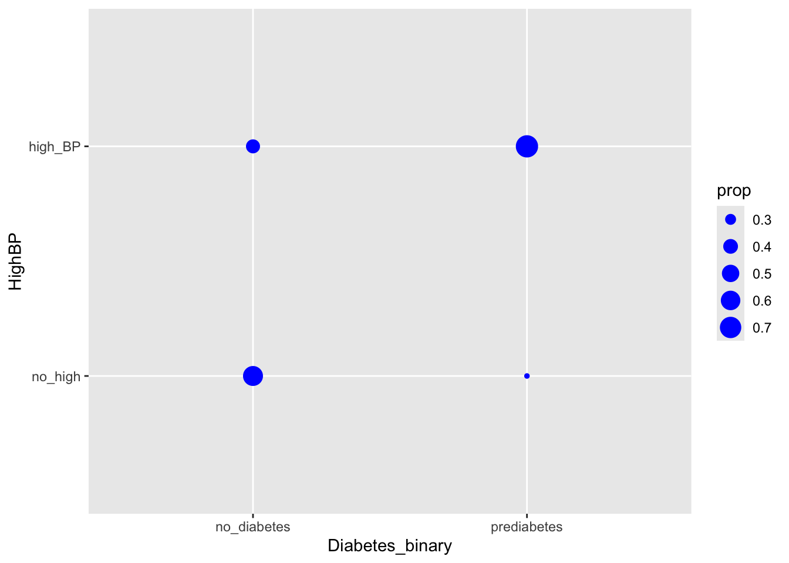
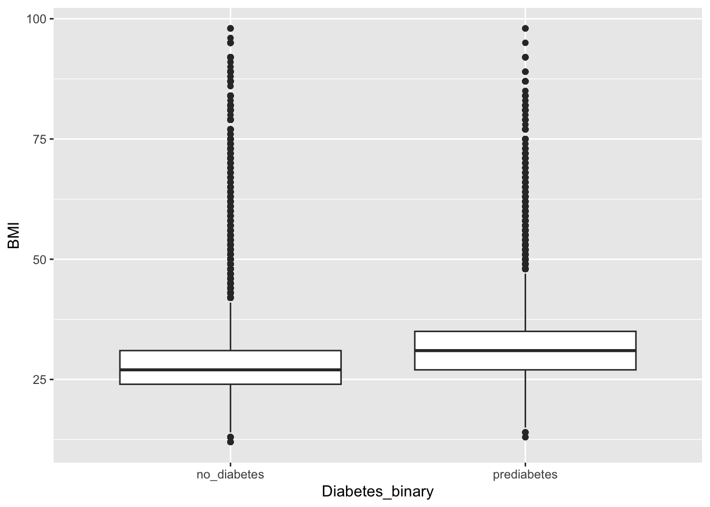

EDA Notebook for Diabetes Health Indicators Dataset
1. Introduction
1.1 Dataset
Diabetes _ binary _ health _ indicators Dataset is a clean dataset of 253,680 survey responses to the CDC’s BRFSS2015. The target variable Diabetes_binary has 2 classes. 0 is for no diabetes, and 1 is for prediabetes or diabetes. This dataset has 21 feature variables which have been reported can influencing diabetes disease and other chronic health conditions based on diabetes disease research.
Among all variables, I tried to select features, which I thought could be important risk factors for diabetes and other chronic illnesses. The selected features from the BRFSS 2015 dataset are:
Response Variable / Dependent Variable:
Diabetes_binary O for no diabetes, 1 for prediabetes.
Independent Variables:
HighBP, High Blood Pressure
0 = no high BP 1 = high BP
HighChol, High Cholesterol
0 = no high cholesterol 1 = high cholesterol
BMI
Body Mass Index (BMI)
Smoking
Have you smoked at least 100 cigarettes in your entire life? [Note: 5 packs = 100 cigarettes] 0 = no 1 = yes
PhysActivity, Physical Activity
Adults who reported doing physical activity in past 30 days - not including job 0 = no 1 = yes
Veggies Consume Vegetables 1 or more times per day 0 = no 1 = yes
HvyAlcoholConsump, Alcohol Consumption
Heavy drinkers (adult men having more than 14 drinks per week and adult women having more than 7 drinks per week) 0 = no 1 = yes
DiffWalk Do you have serious difficulty walking or climbing stairs? 0 = no 1 = yes
Sex Indicate sex of respondent.
Age 13-level age category.
1.2 EDA and modeling
Exploratory Data Analysis (EDA) is a crucial step in the data science workflow to process this dataset. The primary purpose of EDA in this project including:
Identify Missing Values: Determine the extent and pattern of missing data, which helps in deciding how to handle them (e.g., imputation, deletion).
Examine Relationships: Explore correlations and interactions between variables to uncover potential predictors and multicollinearity issues.
After EDA, we will employ several models for this dataset. The ultimate goal of modeling is to develop a predictive models that accurately captures the relationship between input features (response variables) and the target variable (diabetes here) to make reliable predictions on new, unseen data.
2. Get the Data
library(tidyverse)
── Attaching core tidyverse packages ──────────────────────── tidyverse 2.0.0 ──
✔ dplyr 1.1.4 ✔ readr 2.1.5
✔ forcats 1.0.0 ✔ stringr 1.5.1
✔ ggplot2 3.5.1 ✔ tibble 3.2.1
✔ lubridate 1.9.3 ✔ tidyr 1.3.1
✔ purrr 1.0.2
── Conflicts ────────────────────────────────────────── tidyverse_conflicts() ──
✖ dplyr::filter() masks stats::filter()
✖ dplyr::lag() masks stats::lag()
ℹ Use the conflicted package (<http://conflicted.r-lib.org/>) to force all conflicts to become errors
library(tidyr)library(ggplot2)
First, we read in the data and check the variables via str().
Warning: The dot-dot notation (`..prop..`) was deprecated in ggplot2 3.4.0.
ℹ Please use `after_stat(prop)` instead.

From the bubbleplot, we can note that in the group of no diabetes, lager portion of case with no high BP, while high BP dominates the group of prediabetes, suggesting the potential positive relationship between the two variables.
4.2 Covariation between HighChol with Diabetes_binary
Similar with HighBP, we can note that in the group of no diabetes, lager portion of case with no high cholesterol, while high cholesterol dominates the group of prediabetes, suggesting the potential positive relationship between the two variables.
4.3 Covariation between Smoker with Diabetes_binary
From the bubbleplot, we can note that in the group of no diabetes, lager portion of case with non smoker, while in the group of prediabetes, there are more smoker than non smoker, suggesting the potential positive relationship between the two variables.
4.4 Covariation between BMI with Diabetes_binary
ggplot(diab_df, aes(x = Diabetes_binary, y = BMI)) +geom_boxplot()

The boxplot showed that the media value of BMI in prediabetes group is bigger than no diabetes group.
4.5 Covariation between Veggies with Diabetes_binary
We can note that in no diabetes group, most case do not have diffwalk, while in prediabetes, the portion of diffwalk increased, but still less than no-diffwalk samples.
4.8 Covariation between HighBP with Diabetes_binary
From the bubbleplot, we can note that in the group of no diabetes, lager portion of case with no high BP, while high BP dominates the group of prediabetes, suggesting the potential positive relationship between the two variables.
The plot indicates that the female dominates no diabetes group, while the portion of male increased in prediabetes group, which is almost half to half with female cases.
In general, as age getting bigger, the portion getting bigger first and then decreased in both diabetes groups. However, compared to no diabetes group, the younger people have less portion in prediabetes group, and the largest portion showed in age 65-69.